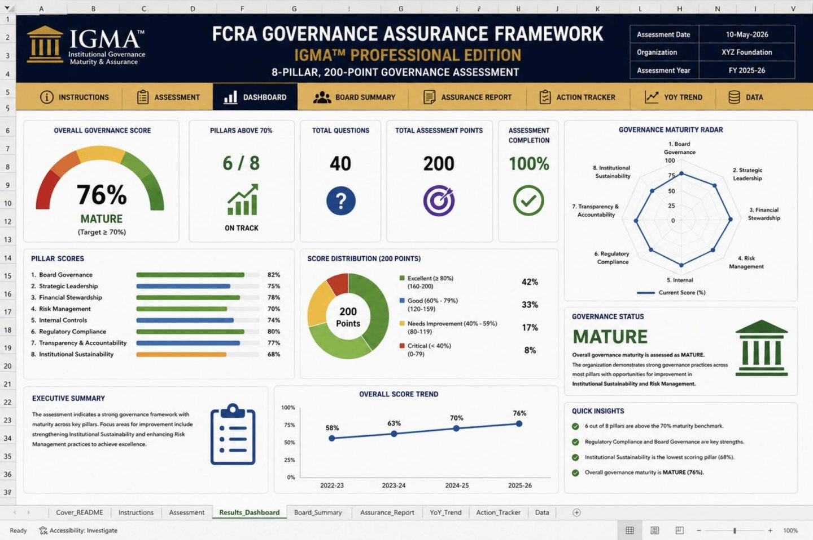
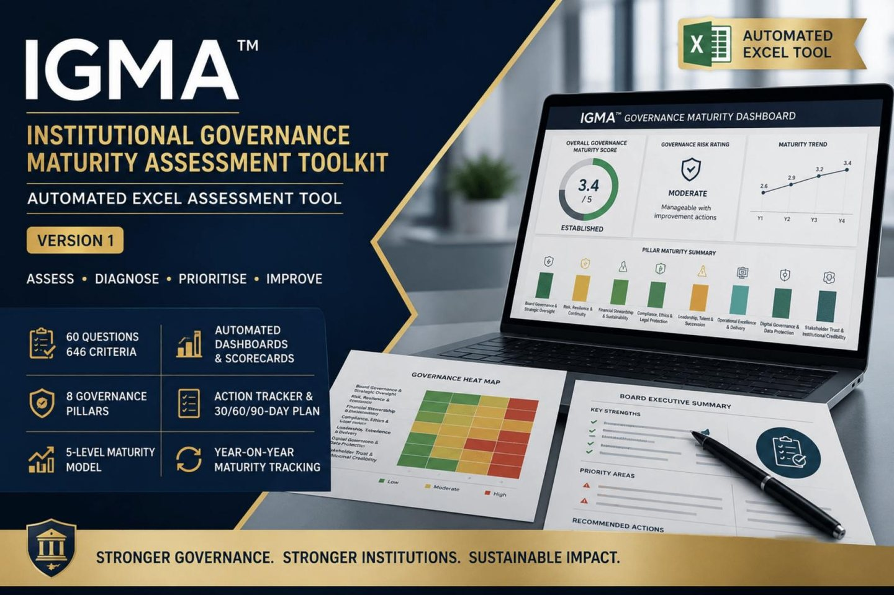

Most boards assume their governance is fine until a funder audit, leadership transition or compliance notice proves otherwise. IGMA™ assessments score your organisation against a five-level maturity scale, with automated dashboards and a prioritised action list — not another checklist to file away.
Every IGMA™ assessment scores your organisation against this scale, then gives your board a dashboard and a prioritised action list to move up a level. Not sure which level you're at? The free briefing is a good starting read before you commit to a full assessment.
Start from the question your Board, funder or regulator is asking.
IGMA™ was created by CA Sunil Kumar, FCA — a Chartered Accountant and social-sector CFO with 30+ years in NGO and development-sector finance, audit and governance. It grew out of work he has done repeatedly: managing a USD 60 million donor-funded portfolio, reporting to Board Audit Committees, building sub-recipient risk frameworks, clearing audit findings to nil observations, and carrying out audit and grant-monitoring visits in every state of India. The toolkits package that experience as self-assessments your own team can run. More about the author.
IGMA™ (Institutional Governance Maturity Assessment) is a methodology created by CA Sunil Kumar, FCA, in public use since June 2026.
Watch the method explained and demonstrated before you buy. More free videos.
Automated Excel workbooks: answer the questions, and the dashboards, Board summary and action plan are calculated for you.


Choose the scope that matches your immediate risk — FCRA compliance, data protection, or full institutional governance.
Looking for the FCRA Governance Maturity Framework book? It's on the Books page.
Excel-based, automated. Take control of your India DPDP Act compliance assessment.
Format: Excel workbook, automated scoring.A structured, organisation-wide assessment of your FCRA compliance position — so you know where you stand, not just assume it.
Format: automated Excel assessment tool.The FCRA Governance Assurance Framework — a 6-pillar, 40-question, 411-criteria automated Excel assessment, for organisations that need audit-ready documentation.
Format: 6-pillar, 40-question, 411-criteria automated Excel assessment tool.A structured, evidence-based governance diagnostic covering the full institution: 60 questions across 8 pillars, 646 evidence-based criteria, Board-ready outputs.
Format: 14-tab Excel workbook (Excel 2016+, no macros). Read the FAQ.The three compliance toolkits together — FCRA compliance, FCRA governance and DPDP — for $700 instead of $900 bought separately.
FCRA Compliance + FCRA Governance (Professional Edition) + DPDP Compliance, in one purchase.
"Very useful document and compilation of checklists for Governance. Must buy for each and every NGO Board members and key functionaries. Excellent work by the author Mr. Sunil Kumar."
— Bhushan Mehta, verified Gumroad buyer, India, on the IGMA™ toolkitsMainly about the Institutional Governance Maturity toolkit. The licence and support answers apply to every IGMA™ toolkit.
An automated Excel workbook that measures how mature your organisation's governance is, on a 1.0–5.0 scale. You answer evidence-based Yes/No criteria. The workbook scores them and produces a dashboard, a Board-ready summary, gap recommendations and an action plan.
NGOs, foundations, trusts and other mission-driven organisations. It is built for Boards, CEOs, CFOs, governance and compliance leads, and internal audit — anyone who needs to show funders, regulators or their own Board where governance stands.
CA Sunil Kumar, FCA — a Chartered Accountant and social-sector CFO with 30+ years in NGO and development-sector finance, audit and governance. He has led finance and grants for large donor-funded programmes, including a USD 60 million donor-funded portfolio, and supported the closure of a USD 60 million donor-funded programme with zero disallowance. More about the author.
IGMA™ has been in public use since June 2026.
A checklist tells you what to have. IGMA™ tells you how mature each practice is, weights the results by pillar, and lists your specific gaps from your own "No" answers. It then turns those gaps into a 30-60-90 day plan and a Board pack. Scoring is deliberately conservative: anything below 4.0 is flagged as meaningful exposure, not "room to improve".
No. 58 of the 60 questions apply to any mission-driven organisation. Two refer to Indian law. Outside India:
The criteria for these two questions are worded for India, so a local expert should review your answers.
60 questions across 8 governance pillars, assessed through 646 Yes/No criteria:
| Pillar | Questions |
|---|---|
| Board Governance & Strategic Oversight | 8 |
| Risk, Resilience & Continuity | 8 |
| Financial Stewardship & Sustainability | 10 |
| Compliance, Ethics & Legal Protection | 8 |
| Leadership, Talent & Succession | 6 |
| Operational Excellence & Delivery | 6 |
| Digital Governance & Data Protection | 6 |
| Stakeholder Trust & Institutional Credibility | 8 |
Topics include Board independence; enterprise risk and donor dependency; reserves and internal financial controls; conflict of interest, whistleblowing and safeguarding; CEO succession; cybersecurity; and donor confidence.
No. Financial Stewardship carries the highest weight. Leadership, Operations and Digital Governance carry the least. The overall score is a weighted average of the pillars you have answered.
One Excel workbook (.xlsx) with 14 tabs:
No. Microsoft Excel 2016 or later, or a fully compatible spreadsheet application, is all you need. There are no macros to enable.
There are two routes:
| Route | What you do | Responses | What it measures | Best for |
|---|---|---|---|---|
| Detailed (recommended) | Answer Yes/No criteria per question | 646 | Demonstrated maturity — what the evidence supports | Board, funder or external audit use |
| Concise | Enter one 1–5 score per question | 60 | Perceived maturity — what leadership believes | A quick scan, workshop or Board discussion |
For each question, the workbook scores whichever route you actually filled in and records which one it used.
Leadership may rate a practice at Level 4 because a process exists, while the criteria show it is not applied consistently. IGMA™ calls this difference the Governance Perception Gap™. The gap is a finding in itself, so investigate it rather than forcing the scores to agree.
As a guide: self-assessment 2–3 hours; facilitated workshop 4–6 hours; independent review 1–2 days. You can also complete it in stages.
One governance, compliance or finance lead usually prepares it. For a full assessment, we recommend involving the Board Chair, CEO, CFO, COO and the risk, compliance and HR leads. Disagreements between them are useful. If the CEO says Level 4 and the CFO says Level 2, you have found a governance gap that a clean audit will not show.
No. Unanswered questions are excluded from scoring, not penalised. You can produce results from a partial assessment and complete the rest later.
Yes means the statement is clearly and consistently true right now, with evidence. Partly true or uncertain counts as No. Each criterion has a Notes/Evidence column to record what supports the answer.
Formal documents are strongest: approved policies, Board minutes, registers and audit reports. Operational reports are moderate evidence. Verbal confirmation alone is weak. Where evidence is weak or conflicting, choose the lower level you can support.
No. Only the yellow cells are for input; every other cell is locked. No password is needed for normal use. For structural changes, such as relabelling a pillar or adding rows, contact support for unlock guidance.
Yes. A built-in consistency check flags questions where a basic weakness is confirmed alongside a higher-maturity practice, so you can review before finalising.
Yes. Enter a 1–5 score in Scores View to apply professional judgment where context changes the picture. The override then takes priority in all calculations.
Every question starts at 1.0 and gains up to 1 point for each of Levels 2–5, in proportion to how many of that level's criteria you meet. Scores map to five maturity levels:
| Score | Maturity level | Risk rating |
|---|---|---|
| 4.50–5.00 | Level 5 – Optimised | Very low |
| 3.50–4.49 | Level 4 – Managed | Low |
| 2.50–3.49 | Level 3 – Defined | Moderate |
| 1.50–2.49 | Level 2 – Reactive | High |
| 1.00–1.49 | Level 1 – Vulnerable | Critical |
All outputs update automatically from your answers:
No. Recommendations are built from your own "No" answers above your current level. Each gap also shows the governance risk if it persists.
Gaps are phased into a roadmap:
| Score | Timeframe |
|---|---|
| 1–2 | Within 0–30 days |
| Around 2–3 | Within 31–90 days |
| Around 3–4 | Over 3–12 months |
The Action Tracker assigns an owner, target date and status to every question.
Optionally. The main benchmark is your own trend over time, measured against a fixed floor of 4.0. If you have real peer data, you can enter it per question and the gap is calculated automatically. There is no live external data feed.
Yes. The Year-on-Year Trend tab logs each assessment's scores. The Audit Log records who prepared, reviewed and approved it.
We recommend reassessing every 12 months for the leadership team and annually for the Board, with independent validation every 2–3 years.
Digitally, by download or email link straight after purchase. Nothing physical is shipped. Please keep your own backup copy.
A single-organisation, perpetual licence. Your organisation can install and use the workbook on any number of its own devices for internal governance use, with no expiry.
No. Redistribution, resale, sub-licensing or sharing outside the purchasing organisation requires prior written consent from the publisher. Consultants who want to use it with clients should email sunil@sunilkumarfca.com about a separate consultant licence before buying.
No. The licence covers use of the workbook. Copyright in the methodology, criteria and workbook design stays with the publisher.
A one-time purchase with a perpetual licence, with no renewal fees.
Updates within version 1 (v1.x) are free for existing buyers and are delivered through your Gumroad library. A future major version (v2.0) would be a separate product. Any discount for existing buyers will be announced at release.
The Institutional toolkit is sold on its own. The IGMA™ Compliance Toolkits Bundle ($700) combines the three compliance toolkits — FCRA Compliance, FCRA Governance (Professional Edition) and DPDP Compliance — for less than buying them separately. The IGMA™ FCRA Governance Maturity Framework book explains the thinking behind the FCRA toolkits.
No. IGMA™ is a structured self-assessment tool, not legal, accounting or other professional advice. Where you need expert assistance, consult a qualified professional.
Email CA Sunil Kumar, FCA at sunil@sunilkumarfca.com. We aim to reply within 2 business days (India time). Support covers using the workbook, fixing errors and unlock guidance. It does not include governance advice on your answers or results.